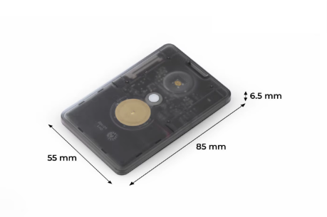
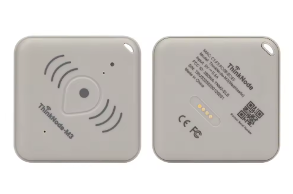

About SoftRF
Updated May 06, 2026 for version VB008
What is SoftRF
SoftRF is a do-it-yourself, multifunctional, compatible, radio-based proximity awareness system for general aviation. SoftRF is free, open-source software that runs on inexpensive off-the-shelf hardware. This software, when installed on suitable hardware (SenseCap T1000E) and carried in an aircraft, transmits data on its position, and receives position data from other aircraft with compatible systems.
Using SoftRF in your aircraft (when configured to use the "Latest" (FLARM) protocol) will:
- Make you visible to other FLARMs
- Make you visible to OGN ground stations, viewable on sites like puretrack.io or glidertracker.org
- Make other FLARMs visible on your devices such as glide computers
- Generate collision warnings, alone or in conjunction with other devices
What this can SoftRF PG do that FLARM cannot?
On T1000E, SoftRF can send traffic and position data via Bluetooth, to Compatible Apps* which older FLARM models cannot do without additional hardware. SoftRF can also operate using radio protocols other than the one used by FLARM, such as OGNTP, ADS-L, P3I or FANET. SoftRF can run all day on a small internal battery.
What can this version do that mainline SoftRF cannot?
- Receive and transmit in the new FLARM protocol (V7) from March 2024
- Correctly transmits FANET full suite of messages
- Correctly transmits curved flight path for collision prediction in thermals
- Interprets curved paths from FLARM units, with wind drift compensation
- Built-in audible collision warnings in 3 urgency levels
- Assign aircraft IDs, specify IDs to ignore or follow
- Record IGC flight log files
- Transmit in an alternate protocol (FANET) every 4 seconds
- Receive ADS-L signals simultaneously with FLARM signals
- Operate on two or three protocols simultaneously
- Relay selected traffic for increased range
History
FLARM, the traffic awareness and collision avoidance system adopted by most glider pilots in Europe, operates in the 866-928 MHz range. It transmits in low power (25 milliwatts), in short bursts of a few milliseconds, once or twice per second.
Linar Yusupov (github.com/lyusupov/SoftRF) developed SoftRF, which sends, receives and interprets signals compatible with FLARM. Moshe Braner (github.com/moshe-braner/SoftRF) further developed SoftRF, making it a more complete functional equivalent to FLARM.
Vlad Belayev (github.com/slash-bit/SoftRF-T1000E) adobted SoftRF for SenseCapT -T1000E device, further improved functionality by adding FANET full protocol suite, making suitable for paragliding.Hardware Choices
This version of SoftRF runs on certain devices with "system on a chip" CPU:
- Seeed SenseCap "T1000-E" — "Card" edition. nRF52840-based Lr1110 radio with GNSS and BLE, plus 8MB Flash.
- LilyGo "T-Echo" — "Badge" edition. nRF52840-based with e-paper display and BLE.
- Elecrow M3 (ThinkNode) — LR1100 Radio, Bluetooth, GNSS no SPI Flash (only EEPROM)


Voice Warnings
SoftRF can generate voice warnings about traffic in danger of collision via built-in Piezo Buzzer